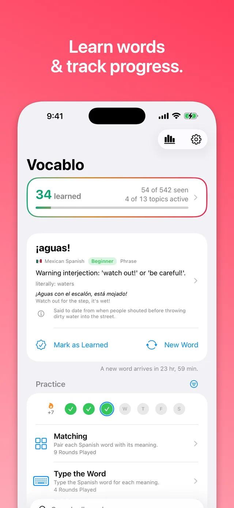
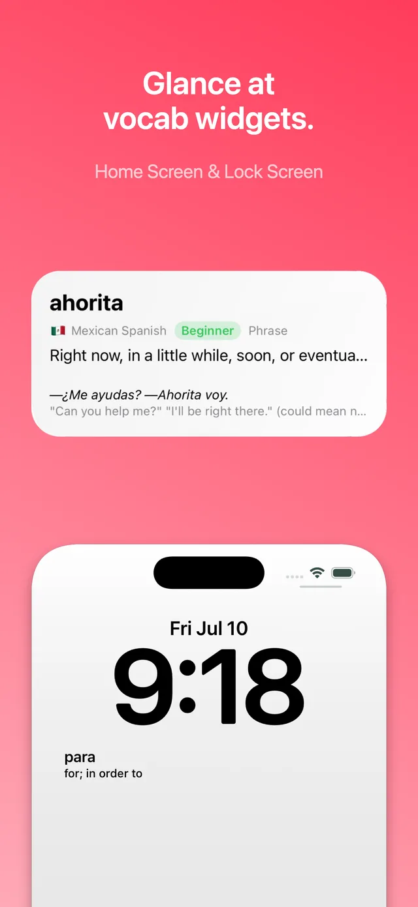
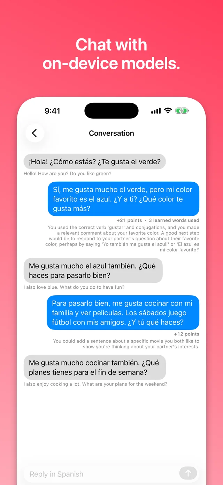
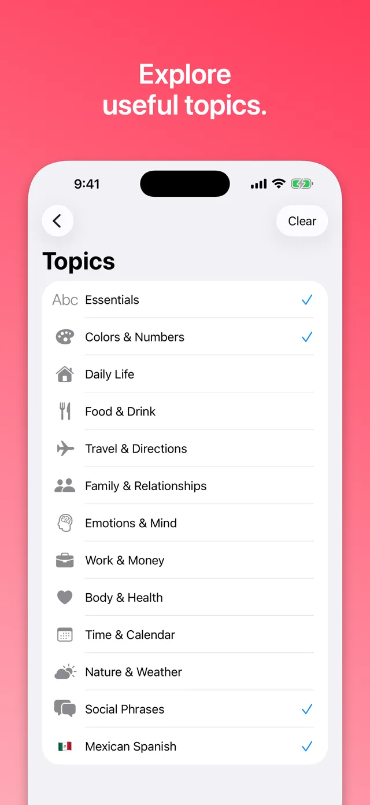
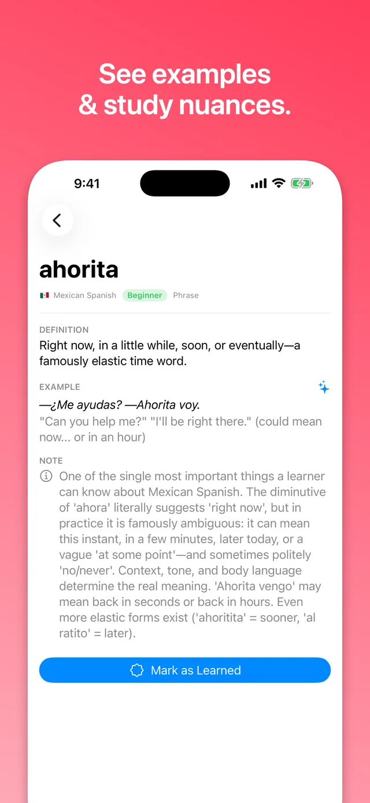
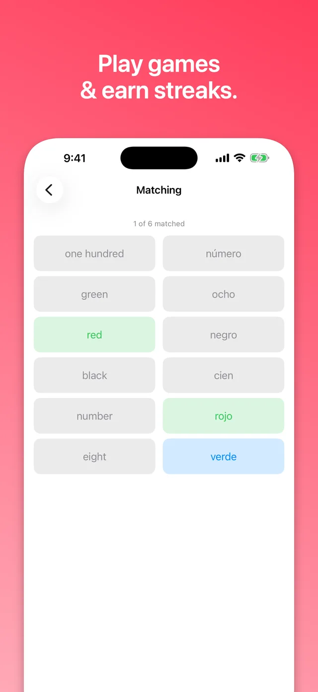

Learn Mexican Spanish,
one glance at a time.
Vocablo puts real, conversational Mexican Spanish vocabulary on your iPhone Home Screen, Lock Screen, iPad, and Mac desktop — so you learn passively, all day, without opening an app.
Free to start · iPhone, iPad & Mac · No accounts






Vocabulary widgets, everywhere you look.
Widgets make learning ambient. A new word — with its meaning, an example, and cultural notes a tap away — meets you at a glance all day long.
- iPhone Home Screen & Lock Screen. Full-size widgets plus compact accessory widgets keep Spanish in view from your first glance of the morning.
- Mac desktop. Vocabulary sits beside your work — Vocablo is a fully native Mac app, not a port.
- Multiple widgets, side by side. Each one rotates through a different topic you're studying.
- Synced by iCloud. Your streak, learned words, and settings follow you across iPhone, iPad, and Mac.
Real Mexican Spanish, not textbook Spanish.
Most Spanish apps teach a generic, region-less Spanish. Vocablo's dictionary is different:
- 550+ curated words and phrases, hand-picked for everyday conversation in Mexico.
- Frequency-graded difficulty — you learn the words people actually say first, ordered by real-world usage.
- Cultural nuance included — like why "ahorita" can mean right now, in an hour, or politely never.
- Native pronunciation with a Mexican Spanish voice, spoken on demand.
13 practical topics:
- 🔤 Essentials
- 🎨 Colors & Numbers
- 🏠 Daily Life
- 🍽️ Food & Drink
- ✈️ Travel & Directions
- 👥 Family & Relationships
- 🧠 Emotions & Mind
- 💼 Work & Money
- ❤️ Body & Health
- 📅 Time & Calendar
- 🌤️ Nature & Weather
- 💬 Social Phrases
- 🇲🇽 Mexican Spanish
Practice that actually sticks.
Games and streaks turn passive exposure into recall, built from the very words your widgets have been showing you all day.
- Matching, Type the Word & El o La. Quick, focused rounds that build recall — including grammatical gender practice.
- Streaks & automatic progression. Daily practice streaks and curriculum advancement keep you moving from beginner words toward natural vocabulary.
- Learn, favorite & share. Mark words learned or favorited as you go, and share beautiful vocab cards with the friends you're learning for.
Your on-device conversation partner.
Vocablo uses Apple Intelligence to make practice feel like talking to a person — without a single byte leaving your device.
- Chat in Spanish with Sofía, a conversation partner who meets you at your level.
- Per-turn coaching — every reply is scored, with concrete suggestions and points for using the words you've learned.
- Faithful translations under every message, so you always know what was said.
- Fresh example sentences on demand for any word in the dictionary, written on-device.
- Entirely offline. Conversations run on the Apple Intelligence model built into your device — never a server.
Private by architecture.
- No account. No sign-up. Download and start learning.
- No ads, no tracking, no analytics backend. There is no server to send your data to.
- On-device AI. Conversation practice and example generation use Apple Intelligence locally — your chats never leave your device.
- Works fully offline. The dictionary, games, and pronunciation all ship inside the app.
- Accessible. Spanish content is language-tagged, so VoiceOver and Spoken Content pronounce it with a proper Spanish voice.
Simple pricing.
Start free. Upgrade when you want the full curriculum.
Free
$0
- Four beginner starter topics
- Widgets on iPhone, iPad & Mac
- Practice games & streaks
Vocablo Plus
$14.99/year
- One-week free trial
- All 13 topics, every level
- iCloud sync across devices
- Or just $2.99/month
Lifetime
$39.99 once
- Everything in Plus, forever
- One purchase, no subscription
- Yours on iPhone, iPad & Mac
Frequently asked questions.
What is Vocablo?
Vocablo is a native iPhone, iPad, and Mac app that teaches Mexican Spanish vocabulary through Home Screen, Lock Screen, and desktop widgets, backed by practice games, streaks, and on-device Apple Intelligence conversation practice.
Is Vocablo free?
Yes. The free tier includes beginner words across four starter topics, with widgets and practice games. Vocablo Plus ($2.99/month or $14.99/year with a one-week free trial) unlocks all 13 topics, every difficulty level, and iCloud sync across devices. Prefer to pay once? A lifetime unlock is $39.99 — no subscription.
How is Mexican Spanish different from other Spanish?
Vocabulary, slang, and everyday phrasing differ meaningfully across Spanish-speaking regions. Vocablo's dictionary is curated specifically for conversational Mexican Spanish — including famously elastic words like "ahorita" — rather than generic textbook Spanish.
Does Vocablo work offline?
Yes. The dictionary ships inside the app, Apple Intelligence conversation practice runs on-device, and pronunciation uses the system speech synthesizer. No network connection or account is required.
Is my data private?
Yes. Vocablo has no accounts, no ads, and no tracking. Learning progress stays on your device, and optional cross-device sync uses your personal iCloud. Read the full privacy policy.
Which devices does Vocablo support?
Vocablo runs natively on iPhone and iPad (widgets on the Home Screen and Lock Screen) and on Mac (widgets on the desktop). Progress syncs across all three via iCloud for Vocablo Plus subscribers.
Where are the privacy policy and terms of use?
The privacy policy lives here on the site. Vocablo uses Apple's standard Licensed Application End User License Agreement as its terms of use.
Start learning at a glance.
Free to download. A minute to set up your first widget.
Download Vocablo on the App Store